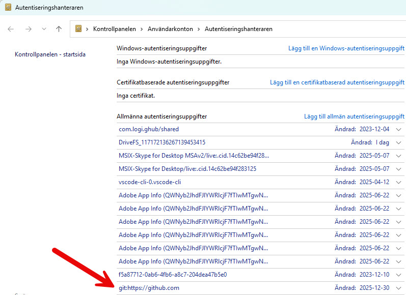
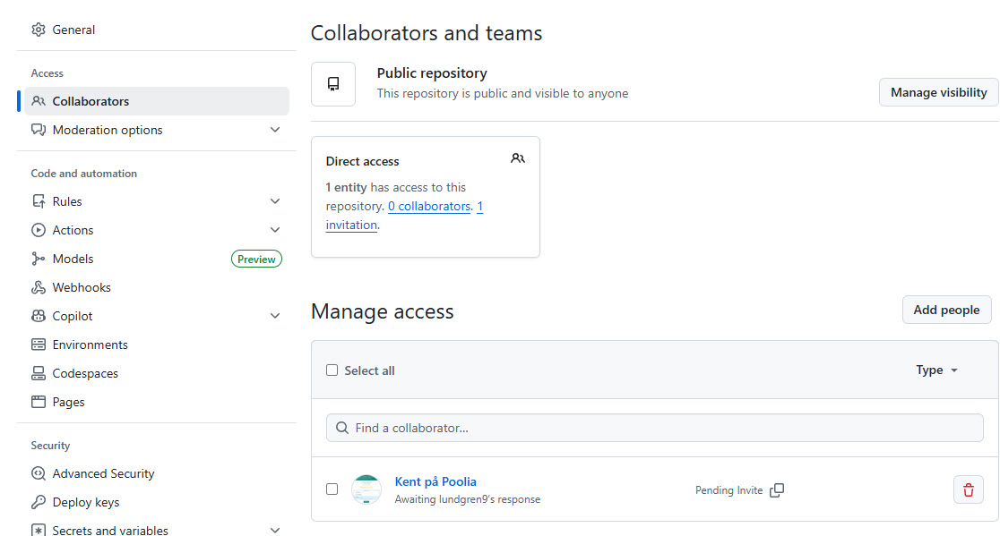

🚀 Git & GitHub Guide - Bjerred Medlemmar
📚 Vad är Git och GitHub?
Git (Versionshantering)
Git är ett versionshanteringssystem som låter dig:
- Spara historik över alla ändringar i ditt projekt
- Gå tillbaka till tidigare versioner
- Arbeta med olika versioner parallellt (branches)
- Se vem som ändrat vad och när
GitHub (Remote Repository)
GitHub är en molntjänst som:
- Lagrar dina Git-repositories online
- Gör det möjligt att dela kod med andra
- Fungerar som backup för din kod
- Tillhandahåller verktyg för samarbete
🎯 Viktiga Git-begrepp
Repository (Repo)
En mapp som Git övervakar. Innehåller alla dina filer plus en dold .git-mapp med historik.
Commit
En "ögonblicksbild" av ditt projekt vid en viss tidpunkt. Varje commit har ett meddelande som beskriver ändringen.
Remote
En version av ditt repository som finns på en server (t.ex. GitHub). Kallas ofta "origin".
Push
Skicka dina lokala commits till remote repository (GitHub).
Pull
Hämta ändringar från remote repository till din lokala dator.
Branch
En parallell version av koden där du kan arbeta utan att påverka huvudversionen (main/master).
🛠️ Steg-för-steg: Skapa lokalt och remote repository
1Förberedelser
Kontrollera att Git är installerat:
git --version
Konfigurera Git (om inte redan gjort):
git config --global user.name "Kent Lundgren"
git config --global user.email "lundgren.kent@gmail.com"
git config --list
2Skapa .gitignore-fil
En .gitignore-fil talar om för Git vilka filer som INTE ska versionshanteras.
Varför .gitignore?
Vissa filer ska inte laddas upp till GitHub:
- Temporära filer
- Känslig information (lösenord, API-nycklar)
- Stora filer som genereras automatiskt
- OS-specifika filer (t.ex. Thumbs.db på Windows)
Exempel på innehåll i .gitignore:
Thumbs.db
Desktop.ini
*.bak
*~
*.tmp
*.temp
3Initiera lokalt Git-repository
Navigera till projektmappen och initiera Git:
cd D:\VåraFiler_primära_på_SSD\Kent_dokument\Data\HTML\kentlundgren_se\program\Bjerred\medlemmar
git init
✅ Resultat: Du har nu ett lokalt Git-repository!
4Lägg till filer (Staging)
Innan du kan commita måste du "stage" filerna (lägga till dem i staging area):
git status
git add .
git add index.html
git add medlemmar.html
git status
Staging Area: En mellanstation där du samlar de ändringar du vill inkludera i nästa commit.
5Skapa första commit
Spara en ögonblicksbild av projektet:
git commit -m "Initial commit: Bjerred medlemshanteringssystem"
⚠️ Viktigt: Skriv alltid tydliga commit-meddelanden som beskriver VAD du ändrat och VARFÖR.
Exempel på bra commit-meddelanden:
- "Lagt till sökfunktion för medlemmar"
- "Fixat bug i datumformatering"
- "Uppdaterat medlemsdata med nya medlemmar"
6Skapa repository på GitHub
Nu ska vi skapa ett remote repository på GitHub:
Alternativ A: Via GitHub webbgränssnitt (Rekommenderas för nybörjare)
- Gå till github.com och logga in
- Klicka på "+" i övre högra hörnet → "New repository"
- Fyll i:
- Repository name: Bjerred-medlemmar
- Description: Medlemshanteringssystem för Bjerred
- Public/Private: Public
- VIKTIGT: Kryssa INTE i "Initialize with README" (vi har redan filer)
- Klicka "Create repository"
Alternativ B: Via GitHub CLI (Kommandorad)
gh auth login
gh repo create Bjerred-medlemmar --public --source=. --remote=origin
7Koppla lokalt repo till GitHub (Remote)
Efter att du skapat repositoryt på GitHub, koppla ihop det med ditt lokala repo:
git remote add origin https://github.com/kentlundgren/Bjerred-medlemmar.git
git remote -v
8Byt till main-branch (om nödvändigt)
GitHub använder "main" som standardbranch, men Git kan skapa "master":
git branch
git branch -M main
📖 Master vs Main - Historik och förklaring:
Historiskt (före 2020):
Git använde "master" som standardnamn för huvudbranchen när man körde
git init.
Nu (efter 2020):
På grund av inkluderingsskäl har branschen gått över till att använda "main" istället för "master".
- GitHub: Använder "main" som standard för nya repositories sedan oktober 2020
- Git (lokal): Vissa versioner skapar fortfarande "master" som standard
- GitLab, Bitbucket: Använder också "main" numera
Vad ska du göra?
För att undvika förvirring, använd alltid "main" för nya projekt. Om Git skapar "master", byt till "main" med kommandot ovan.
Ändra Git's standardbranch-namn permanent:
git config --global init.defaultBranch main
9Pusha till GitHub
Nu ska vi skicka upp all kod till GitHub:
git push -u origin main
🔄 Dagligt arbetsflöde
När du gör ändringar i projektet:
git status
git diff
git add .
git add index.html medlemmar.html
git commit -m "Beskrivning av ändringen"
git push
📖 Användbara Git-kommandon
Visa historik
git log
git log --oneline
git log --oneline --graph --all
Ångra ändringar
git restore index.html
git restore --staged index.html
git commit --amend -m "Nytt meddelande"
Branches
git branch
git branch ny-funktion
git checkout ny-funktion
git checkout -b ny-funktion
git checkout main
git merge ny-funktion
Hämta ändringar från GitHub
git pull
git fetch
💡 Bra att veta
Commit ofta!
Gör små, frekventa commits istället för stora sällsynta. Det gör det lättare att:
- Förstå vad som ändrats
- Hitta när en bug introducerades
- Ångra specifika ändringar
Skriv bra commit-meddelanden
Format:
git commit -m "Lagt till sökfunktion"
git commit -m "Lagt till sökfunktion
Användare kan nu söka medlemmar på namn,
medlemsnummer eller datum. Sökningen är
case-insensitive och söker i realtid."
.gitignore är viktig!
Lägg alltid till en .gitignore INNAN du gör första commit. Det förhindrar att oönskade filer laddas upp.
README.md
En README-fil är första intrycket av ditt projekt. Den bör innehålla:
- Vad projektet gör
- Hur man installerar/använder det
- Eventuella krav (dependencies)
- Kontaktinformation
🚨 Vanliga problem och lösningar
Problem: "fatal: not a git repository"
Lösning: Du är inte i en Git-mapp. Kör git init eller navigera till rätt mapp.
Problem: "fatal: remote origin already exists"
Lösning: Remote finns redan. Ta bort och lägg till igen:
git remote remove origin
git remote add origin https://github.com/kentlundgren/Bjerred-medlemmar.git
Problem: Push nekad - Permission denied / Authentication failed
Exempel på fel:
Orsak: Git försöker använda fel GitHub-konto (t.ex. "lundgren9" istället för "kentlundgren") för att pusha. Detta händer när Windows har sparat gamla inloggningsuppgifter.
🔐 Hur Git-autentisering fungerar i Windows:
1. Första gången du pushar:
Git ber dig logga in på GitHub (vanligtvis via en popup i webbläsaren).
2. Windows sparar dina credentials:
Efter lyckad inloggning sparar Windows dina autentiseringsuppgifter i Windows Credential Manager
(Autentiseringshanteraren på svenska) under namnet: git:https://github.com
3. Framtida push-kommandon:
Git använder automatiskt de sparade credentials - du behöver inte logga in igen.
⚠️ Problemet: Om du har flera GitHub-konton eller gamla credentials, kan Git använda fel konto!
Se bild: Windows Credential Manager med sparade Git-credentials

Lösning 1: Rensa Windows Credential Manager (Rekommenderas för att byta konto) ✅
- Tryck på Windows-knappen och sök efter: "Autentiseringshanteraren" eller "Credential Manager"
- Klicka på "Windows-autentiseringsuppgifter" (Windows Credentials)
- Leta efter poster som börjar med "git:https://github.com" (se bild ovan)
- Klicka på pilen för att expandera posten
- Klicka på "Ta bort" (Remove)
- Försök pusha igen:
git push -u origin main
- Du får nu en ny inloggningsprompt - logga in med rätt konto (kentlundgren)
⚠️ Viktigt: När du tar bort credentials och pushar igen kommer Windows automatiskt
att skapa NYA credentials efter att du loggat in. Dessa nya credentials sparas permanent tills
du tar bort dem igen.
Lösning 2: Lägg till det andra kontot som Collaborator 👥
Om du har två GitHub-konton (t.ex. "kentlundgren" och "lundgren9") och vill att båda ska ha tillgång
till repositoryt, kan du lägga till det andra kontot som collaborator:
Steg för att lägga till collaborator:
- Gå till ditt GitHub-repository:
https://github.com/kentlundgren/Bjerred-medlemmar
- Klicka på Settings (längst till höger i menyn)
- Klicka på Collaborators i vänstermenyn under "Access"
- Klicka på "Add people"
- Skriv användarnamnet (t.ex. "lundgren9") och klicka "Add [username] to this repository"
- Den andra användaren får en invitation via email och måste acceptera den
Se bild: Collaborators-sidan på GitHub

Acceptera collaborator-invitation:
- Logga in på GitHub med kontot som blev inbjudet (t.ex. lundgren9)
- Du kommer se en notifikation om invitation
- Gå till repositoryt eller klicka på notifikationen
- Klicka på "Accept invitation"
- Nu har både "kentlundgren" och "lundgren9" push-rättigheter!
Efter att invitation accepterats:
git push -u origin main
📌 När ska du använda Collaborators?
- ✅ Du har två separata GitHub-konton som båda behöver push-access
- ✅ Du arbetar i team och andra personer ska kunna pusha
- ✅ Du vill ge någon annan rättigheter att ändra i repositoryt
När ska du INTE använda Collaborators?
- ❌ Du vill byta från ett konto till ett annat permanent
- ❌ "lundgren9" är gamla/felaktiga credentials som inte längre ska användas
I ditt fall: Om både kentlundgren och lundgren9 är dina konton, är collaborator-lösningen perfekt!
Om lundgren9 bara är gamla credentials, använd Lösning 1 (rensa Credential Manager) istället.
Lösning 3: Använd GitHub CLI
gh auth login
Lösning 4: Använd SSH istället för HTTPS
SSH-nycklar är mer säkra och kräver ingen lösenordsinloggning:
ssh-keygen -t ed25519 -C "lundgren.kent@gmail.com"
cat ~/.ssh/id_ed25519.pub
git remote set-url origin git@github.com:kentlundgren/Bjerred-medlemmar.git
git push -u origin main
Problem: Merge conflicts
Lösning: När Git inte kan merga automatiskt:
- Öppna filen med konflikten
- Sök efter markeringar:
<<<<<<<, =======, >>>>>>>
- Välj vilken version du vill behålla
- Ta bort markeringarna
- Kör:
git add . och git commit
Problem: Ser filer från andra projekt i Cursor/IDE
Orsak: Det finns ett Git-repository i en överliggande (parent) mapp som inkluderar flera projekt.
⚠️ Viktigt att förstå: Nested Git Repositories
Om du har följande struktur:
D:/
└── kentlundgren_se/ ← Git repo här
├── .git/
├── program/
│ ├── projekt1/
│ ├── projekt2/
│ └── Bjerred/
│ └── medlemmar/ ← Vill ha separat Git repo här
│ └── .git/
Då kan det bli förvirrande! Det överliggande repositoryt (kentlundgren_se) kan "se" alla ändringar i alla undermappar.
Lösningar:
Lösning 1: Öppna bara projektmappen i din IDE (Rekommenderas!) ✅
- I Cursor/VS Code: File → Open Folder (eller
Ctrl+K Ctrl+O)
- Välj BARA medlemmar-mappen:
D:\VåraFiler_primära_på_SSD\Kent_dokument\Data\HTML\kentlundgren_se\program\Bjerred\medlemmar
- Nu kommer Cursor bara fokusera på detta projekt och dess Git-repository
Lösning 2: Lägg till i .gitignore i överliggande repo
Om det överliggande repositoryt ska fortsätta existera, lägg till medlemmar-mappen i dess .gitignore:
program/Bjerred/medlemmar/
Lösning 3: Använd Git Submodule (Avancerat)
För avancerade användare som vill ha separata repositories men ändå länka dem:
git submodule add https://github.com/kentlundgren/Bjerred-medlemmar.git program/Bjerred/medlemmar
💡 Best Practice: För separata projekt som inte är relaterade till varandra,
håll dem i helt separata mappar utanför varandra, eller använd Lösning 1 (öppna bara projektmappen i din IDE).
🔗 Användbara resurser
🔄 Återkoppla lokal mapp till befintligt GitHub-repo (28 maj 2026)
📖 Situationen som uppstod:
Den lokala mappen hade
ingen .git-mapp – Git var aldrig initierat där
(eller hade tagits bort). Cursor visade knappen
"Publish to GitHub" istället för att
visa kopplingen till det befintliga repot på GitHub.
GitHub-repot existerade redan:
github.com/kentlundgren/Bjerred-medlemmar
(med 7 commits och den gamla versionen av index.html).
Den lokala mappen hade
nyare filer (index.html uppdaterad med 2026-data)
som skulle ersätta det som låg på GitHub.
⚠️ Viktigt – klicka INTE på "Publish to GitHub" i Cursor!
Knappen "Publish to GitHub" i Cursor/VS Code skapar ett nytt repo på GitHub.
Den kopplar INTE till ett befintligt repo. Om du klickar på den och redan har ett repo
med samma namn kan du råka skapa ett duplikat eller ett nytt tomt repo.
Diagnos – kontrollera om git är initierat
Kör detta kommando i terminalen för att se om det finns ett git-repo i mappen:
git status
I PowerShell: Kommandot fungerar som vanligt. Men && för att kedja kommandon
fungerar INTE i PowerShell – dela upp dem på separata rader istället.
1Initiera git med rätt branch-namn
Skapa en ny .git-mapp i den lokala mappen. Flaggan -b main sätter
branch-namnet direkt till "main" (istället för gamla standardnamnet "master"):
git init -b main
✅ Resultat: En tom .git-mapp skapas i din lokala mapp.
Cursor/IDE byter nu från "Publish to GitHub" till att visa git-panelen.
2Koppla till det befintliga GitHub-repot
Tala om för git var det remote repositoryt finns. "origin" är standardnamnet för det primära remote-repot:
git remote add origin https://github.com/kentlundgren/Bjerred-medlemmar.git
git remote -v
3Hämta remote-historiken (utan att skriva över lokala filer)
git fetch laddar ner all historik och data från GitHub
utan att röra dina lokala filer. Det är säkert att köra:
git fetch origin
Skillnad fetch vs pull:
git fetch = hämtar info om vad som finns på remote, utan att ändra lokala filer.
git pull = hämtar + slår ihop med dina lokala filer (kan skriva över ändringar!).
4Stagea och committa lokala filer
Nu lägger vi till alla lokala filer i en commit. Det skapar den lokala historiken:
git status
git add -A
Set-Content -Path "$env:TEMP\commitmsg.txt" -Encoding UTF8 -Value "Version 3.0: Uppdaterad med 2026-data"
git commit -F "$env:TEMP\commitmsg.txt"
Varför temp-fil för commit-meddelandet i PowerShell?
Bash stöder heredoc-syntax (<<'EOF') för flerradiga strängar.
PowerShell gör det inte – det ger syntaxfel.
Lösningen är att skriva meddelandet till en temporär fil och använda flaggan -F (file).
5Sammanfoga med remote-historiken (det knepiga steget!)
Nu har vi ett lokalt problem: vår lokala branch har ingen gemensam historik
med remote-branchen (origin/main). Git kallar det "unrelated histories".
⚠️ Varför behöver vi detta steg?
Om vi försöker pusha nu utan detta steg får vi felet:
! [rejected] main -> main (non-fast-forward)
error: failed to push some refs
Git nekar pushen för att det lokala repot inte är en "fortsättning" på remote-historiken.
De två historierna startade oberoende av varandra.
Lösningen är att merga in remote-historiken och tala om för git att vi vet
vad vi gör med flaggan --allow-unrelated-histories:
git merge --allow-unrelated-histories -X ours origin/main -m "Anslut till remote-historik, behåll lokala filer"
✅ Vad händer efter merge?
Filer som BARA finns på GitHub (t.ex. README.md, .gitignore, gamla .jpg-bilder)
hämtas ner och läggs till i din lokala mapp.
Filer som finns på BÅDA ställena (t.ex. index.html) – din lokala version vinner tack vare -X ours.
📖 Alternativet: Force Push (använd ej om du kan undvika det)
Cursor/VS Code erbjuder ibland "Force Push" som lösning på non-fast-forward-problemet.
Force push (
git push --force) skriver ÖVER hela remote-historiken med din lokala.
- ✅ Fungerar tekniskt och är OK om du är ensam på repot och VET vad du gör
- ❌ Farligt om andra jobbar i samma repo – du raderar deras commits!
- ❌ Du förlorar möjligheten att se vad som tidigare låg på GitHub
Bättre approach: Använd
git merge --allow-unrelated-histories
som vi gör här – det bevarar all historik från båda håll.
6Pusha till GitHub
Nu kan vi äntligen pusha! Flaggan -u sätter upp "tracking" så att
framtida git push och git pull vet vilken remote-branch
de ska prata med:
git push -u origin main
🎉 Klart! Din uppdaterade index.html och alla övriga lokala filer
är nu pushade till GitHub. GitHub Pages-sidan uppdateras automatiskt inom några minuter.
Hela processen sammanfattad – PowerShell-kommandon
Här är alla kommandon i rätt ordning för att återkoppla en lokal mapp
till ett befintligt GitHub-repo:
git init -b main
git remote add origin https://github.com/kentlundgren/Bjerred-medlemmar.git
git fetch origin
git add -A
Set-Content -Path "$env:TEMP\msg.txt" -Encoding UTF8 -Value "Ditt commit-meddelande här"
git commit -F "$env:TEMP\msg.txt"
git merge --allow-unrelated-histories -X ours origin/main -m "Anslut till remote-historik"
git push -u origin main
📝 Checklista för detta projekt
✅ Genomförda steg (5 januari 2025):
- ✅ Skapat .gitignore-fil
- ✅ Skapat README.md
- ✅ Skapat GitHub.html (denna dokumentation)
- ✅ Initierat lokalt Git-repository (
git init)
- ✅ Lagt till alla filer (
git add .)
- ✅ Gjort första commit
- ✅ Bytt branch från "master" till "main" (
git branch -M main)
- ✅ Skapat repository på GitHub: Bjerred-medlemmar
- ✅ Kopplat lokalt repo till GitHub (
git remote add origin)
- ✅ Pushat till GitHub (löst via collaborator-lösning med "lundgren9")
✅ Genomförda steg (28 maj 2026) – Återkoppling av lokal mapp till GitHub:
- ✅ Diagnostiserat problemet:
git status → "fatal: not a git repository"
- ✅ Förstått att man INTE ska klicka "Publish to GitHub" i Cursor (skapar nytt repo)
- ✅
git init -b main – skapade ny .git-mapp med rätt branch-namn
- ✅
git remote add origin ... – kopplat till befintligt GitHub-repo
- ✅
git fetch origin – hämtat remote-historik utan att röra lokala filer
- ✅
git add -A + git commit – committat lokala filer (inkl. uppdaterad index.html med 2026-data)
- ✅
git merge --allow-unrelated-histories -X ours origin/main – sammanfogat historiker, lokala filer vann vid konflikter
- ✅
git push -u origin main – pushat till GitHub utan force-push!
- ✅ GitHub Pages uppdateras automatiskt: kentlundgren.github.io/Bjerred-medlemmar
📌 Specialfall i detta projekt:
1. Överliggande Git-repository:
Det fanns ett överliggande Git-repository i en parent-mapp som gjorde att Cursor/IDE visade
filer från andra projekt. Detta löstes genom att öppna bara medlemmar-mappen i Cursor
(File → Open Folder), så att IDE:n endast fokuserar på detta projekt.
2. Multipla GitHub-konton:
Två GitHub-konton används: "kentlundgren" (ägare) och "lundgren9" (collaborator).
Windows Credential Manager sparade credentials för lundgren9, vilket orsakade
autentiseringsproblem vid push. Detta löstes genom att lägga till lundgren9
som collaborator i projektet.
🎓 Nästa steg i din Git-resa:
- Öva på att göra commits regelbundet
- Experimentera med branches för nya funktioner
- Lär dig använda
git log för att utforska historiken
- Testa att klona repositoryt till en annan dator
- Utforska GitHub Actions för automatisering